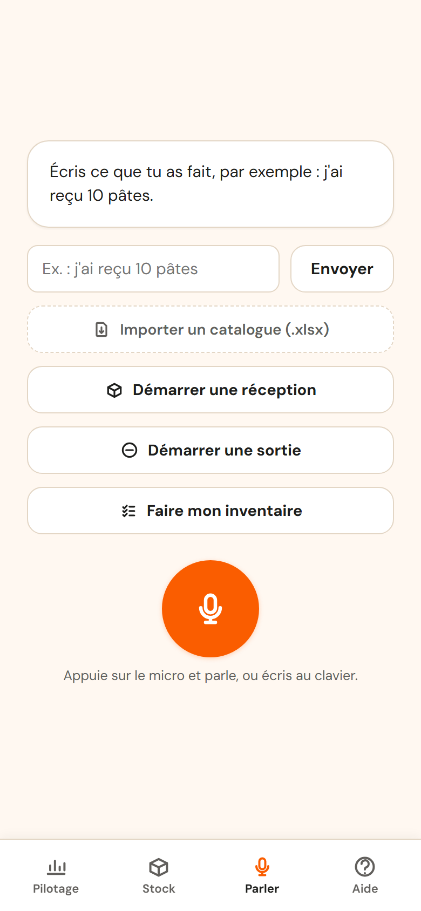
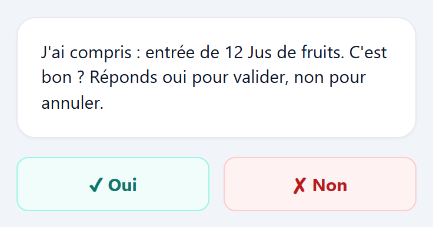
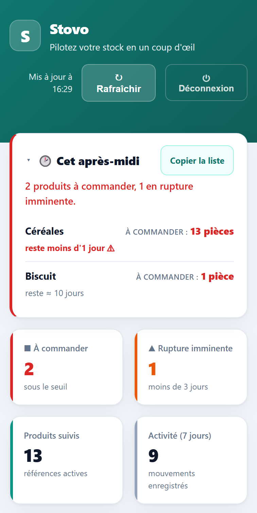
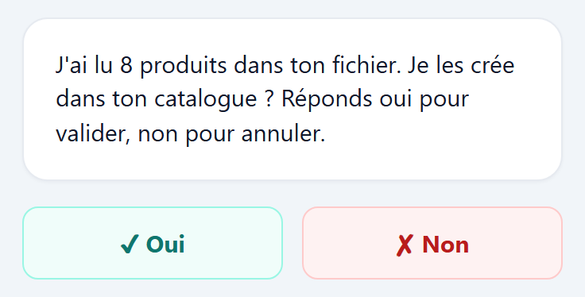

Tenez votre stock à la voix.
Pour les commerces qui tiennent leur stock sur un cahier ou dans un tableur. Vous dites ce qui bouge, Stovo tient le compte.
Choisissez une phrase, comme si vous la disiez. Rien n'est enregistré.
« J'ai reçu douze jus de fruits. »
Vous connaissez déjà le problème.
Un client demande un article. Vous pensiez en avoir. Il n'y en a plus.
Un carton dort au fond de la réserve depuis des mois. Plus personne ne se souvient de lui.
Le soir, boutique fermée, vous ressaisissez votre stock au lieu de rentrer chez vous.
Ce n'est pas un problème de sérieux. C'est un problème d'outil. Un cahier ou un tableur demandent de s'asseoir, d'avoir les deux mains libres et de ne pas être dérangé. Votre journée ne ressemble pas à ça.
Stovo tient votre stock. C'est tout, et c'est voulu.
- Pas de caisse, pas de paiement, pas de ticket.
- Pas de facturation, pas de comptabilité.
- Pas de planning, pas de gestion du personnel.
Chaque fonction en plus est une fonction à apprendre. Si vous cherchez un logiciel qui fait tout, ce n'est pas ici, et vous venez de gagner cinq minutes.
Les questions qu'on me pose.
Et si Stovo comprend mal ce que je dis ?
Il vous montre ce qu'il a compris et il attend. Tant que vous n'avez pas dit oui, rien n'est écrit. S'il s'est trompé, vous corrigez avant, pas après.
Je n'ai jamais utilisé de logiciel de stock.
C'est exactement pour vous. Il n'y a rien à préparer avant de commencer : pas d'unités à créer, pas de catégories à inventer, pas de bon de livraison à ouvrir pour bouger une quantité. Vous parlez, et le stock bouge.
Ça marche debout, dans le bruit, avec une seule main ?
C'est la situation pour laquelle Stovo est fait : la réserve, un carton dans l'autre main, un client qui vous interrompt. Ce qui ne tient pas là ne tient nulle part.
Il faut installer quelque chose ?
Non. Stovo s'ouvre dans le navigateur de votre téléphone, comme un site. Vous pouvez le poser sur votre écran d'accueil si vous préférez.
Où sont mes données ?
Sur des serveurs situés en France. Elles sont à vous, et vous pouvez les récupérer quand vous voulez.
Combien ça coûte ?
Rien aujourd'hui, et il n'y a pas encore de tarif. Je préfère vous le dire plutôt que d'afficher un prix que je changerais dans six mois.
Stovo est en construction, et je préfère vous le dire.
Je m'appelle Corentin. Je viens de la logistique, où j'ai passé des années à organiser des stocks et à faire tourner des équipes. Je fabrique Stovo en m'en servant tous les jours.
Ce que ça veut dire pour vous, concrètement : je n'ai pas encore de témoignage à vous montrer, ni de tarif à vous annoncer. Ce que je cherche, ce sont des commerçants prêts à l'essayer pour de vrai et à me dire ce qui coince.
Si c'est vous, écrivez-moi.
Une question, une remarque, l'envie d'essayer ?
Écrire à CorentinC'est moi qui vous réponds, et je réponds à tout le monde. On regarde votre stock ensemble, un quart d'heure suffit pour savoir si Stovo vous sert à quelque chose.
bonjour.stovo@outlook.com
Trois gestes, et c'est tout.
Stovo se contente de ce que vous pouvez faire debout, une main prise. Parler.
Vous parlez.
« J'ai reçu douze jus de fruits. »
Aucune formule à retenir, aucun code article à taper. Vous parlez comme vous parleriez à quelqu'un.

Stovo propose, vous validez.
L'application vous montre ce qu'elle a compris, et attend. Rien ne s'enregistre tant que vous n'avez pas dit oui. Elle a mal compris ? Vous corrigez avant, pas après.

Vous consultez quand vous voulez.
Le matin, vous voyez ce qui va manquer et ce qu'il faut commander aujourd'hui. Vous commandez ce qui part, pas ce qui dort.

Et vos produits, vous les rentrez comment ?
Vous avez déjà une liste dans un tableur ? Envoyez-la telle quelle. Stovo lit vos colonnes, il ne vous demande pas de les remettre dans son ordre à lui.
